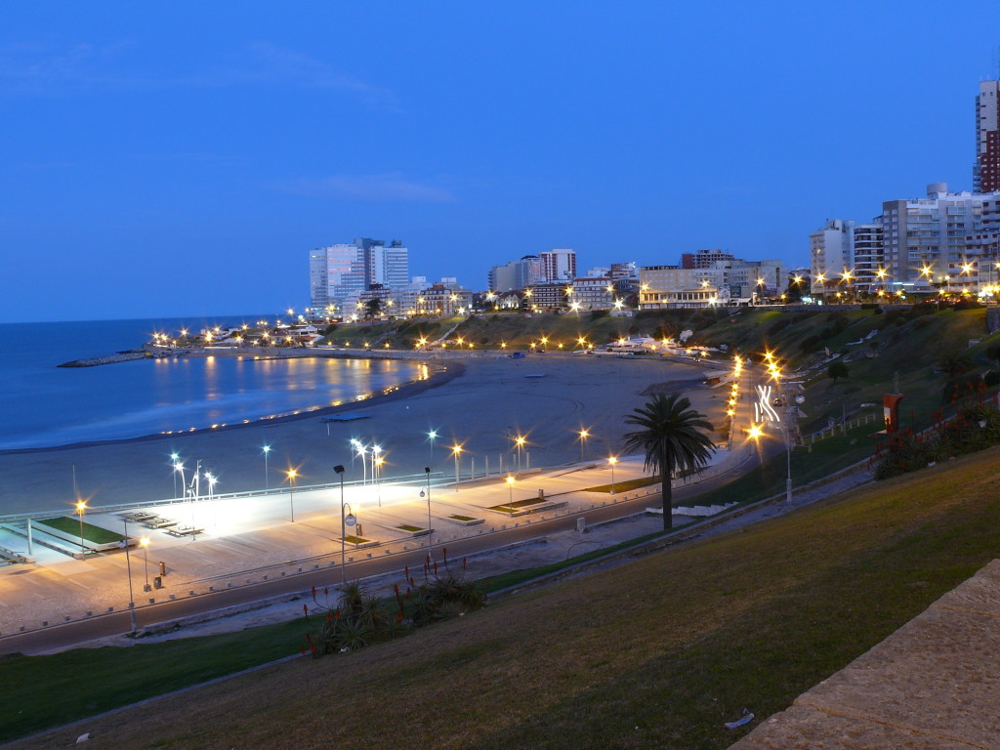
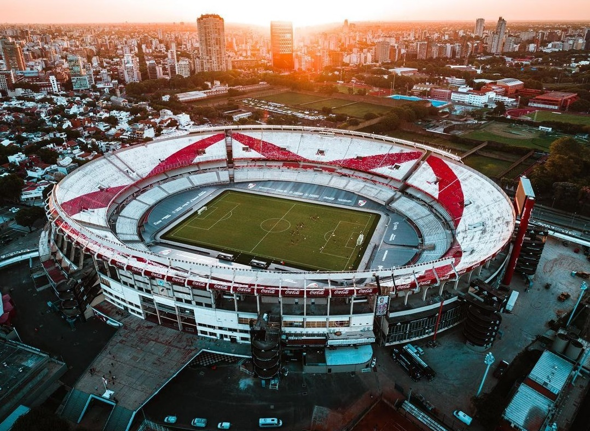
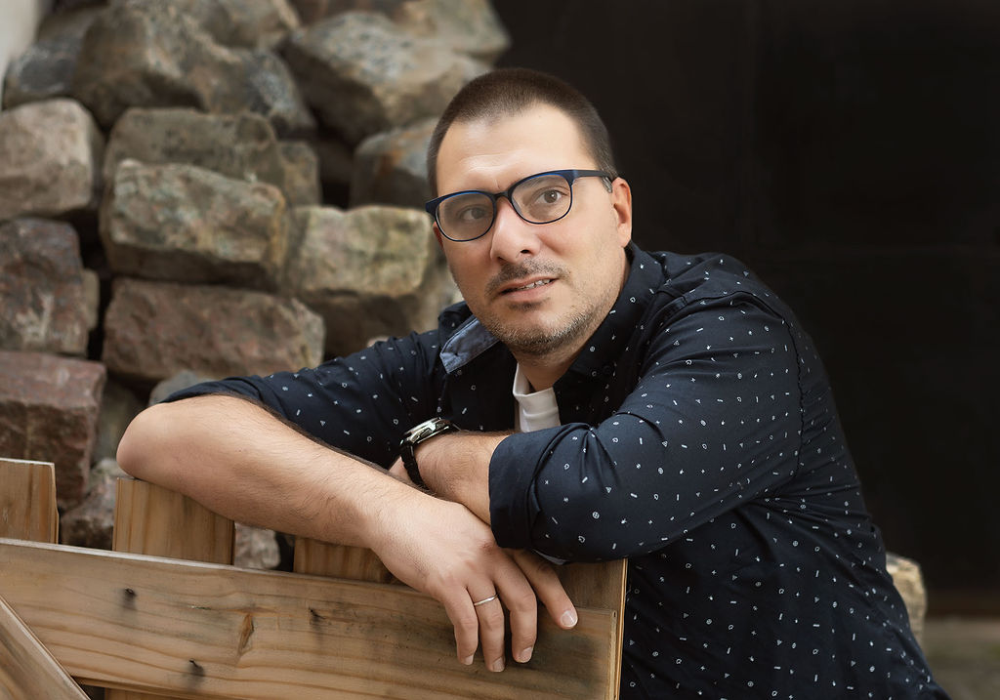
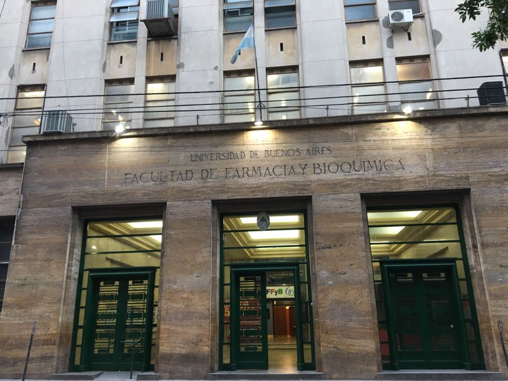

Mar del Plata
Las mejores vacaciones en Familia!

Los Lobos de Mar del Plata
Punto clásico de la ciudad

Monumental de Nuñez
Vamos River
Las mejores vacaciones en Familia!
Punto clásico de la ciudad
Vamos River
Soy una persona que está en un momento de cambio en lo profesional, buscando nuevos rumbos.
O mi SOSTEN, se compone por mi esposa Romina y mis tres hijos; Arián, Elién y Uriel.

Me recibí en la secundaria como Tecnico Químico y en la UBA de Optico.
